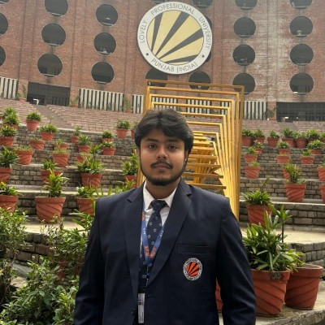

Arslaan Sharique
Java Developer | Web Developer | MCA Student
I am an MCA student at Lovely Professional University (LPU) with hands-on experience in software testing and web development. I am passionate about building reliable applications and ensuring high-quality software delivery.